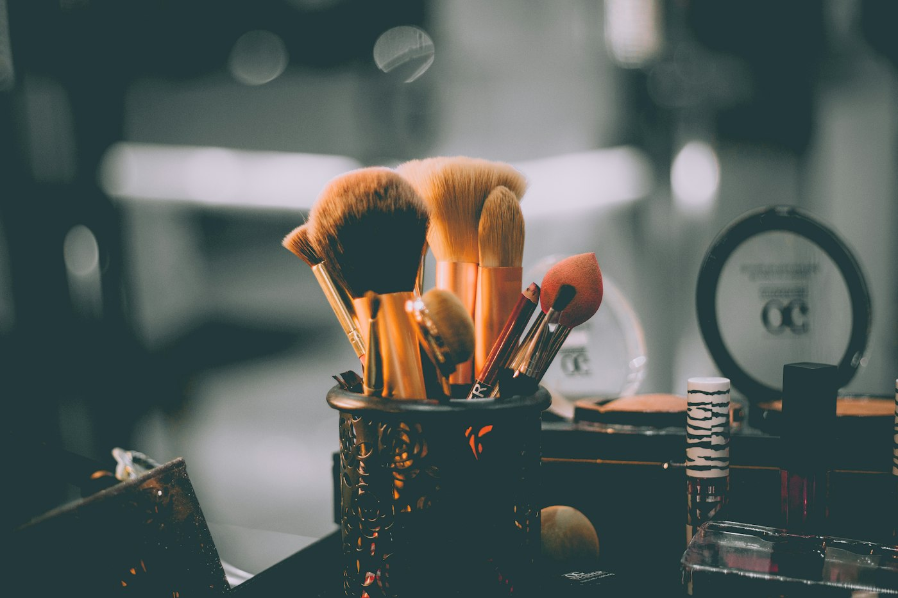

Sobre nosotros
América Villasmil y una academia con identidad propia
La fundadora
Experiencia real de salón, convertida en formación clara
América María Villasmil es propietaria de AV Studio en Calbuco, Chile. Desde 2018 desarrolla capacitación y perfeccionamiento en belleza y peluquería, con foco en color, fibra y resultados sostenibles.
AV Studio Academy nace para organizar ese conocimiento en una plataforma WordPress escalable: cursos online, contenidos editables y una marca digital centralizada para comercializar formación profesional.
“Enseñar el porqué detrás de cada procedimiento para que cada profesional decida con seguridad.”
 América Villasmil
América Villasmil
Propósito
Formar profesionales que entienden el cabello, no solo lo peinan
Misión
Brindar formación accesible y estructurada en tricología cosmética, color y química capilar, para quienes empiezan o buscan especializarse.
Visión
Ser una academia digital de referencia donde la ciencia capilar eleve la calidad, seguridad y diferenciación de los servicios de belleza.
Valores
Criterio científico, cuidado de la fibra, ética profesional, claridad pedagógica y estética de marca impecable.
Trayectoria
De AV Studio a AV Studio Academy
Fundación de AV Studio en Calbuco. Servicios de color, tratamientos y belleza integral.
Especialización diaria en coloración, babylights, nutrición, alisados y protocolos anticaída.
Desarrollo de libros y planes de estudio en tricología y química cosmética capilar.
Lanzamiento de la academia digital en WordPress: abstudioacademy.com